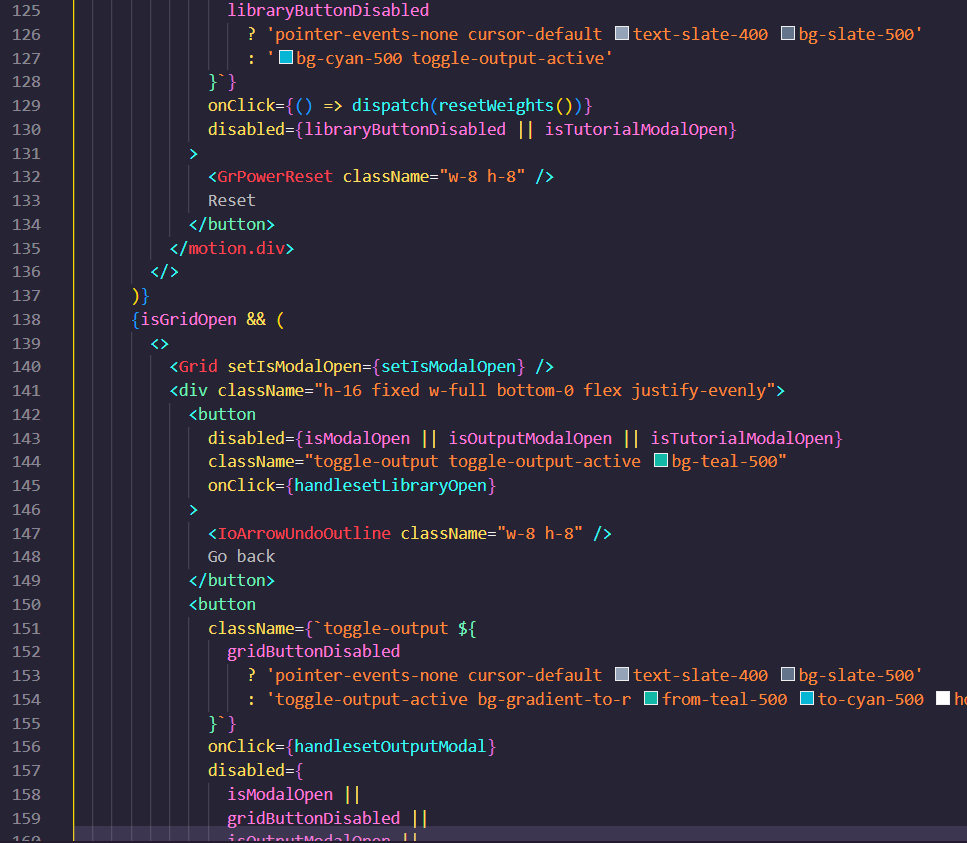
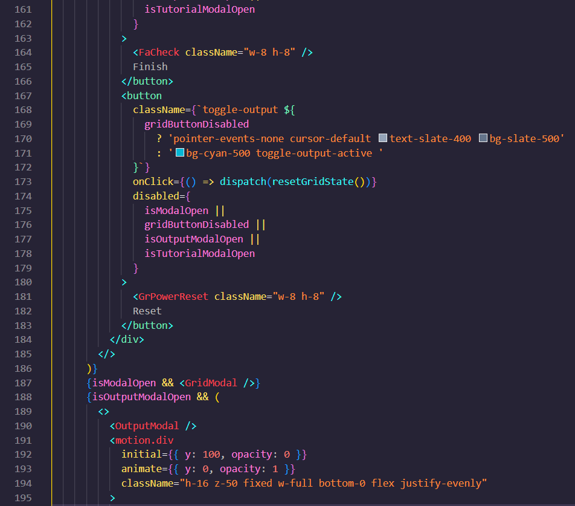
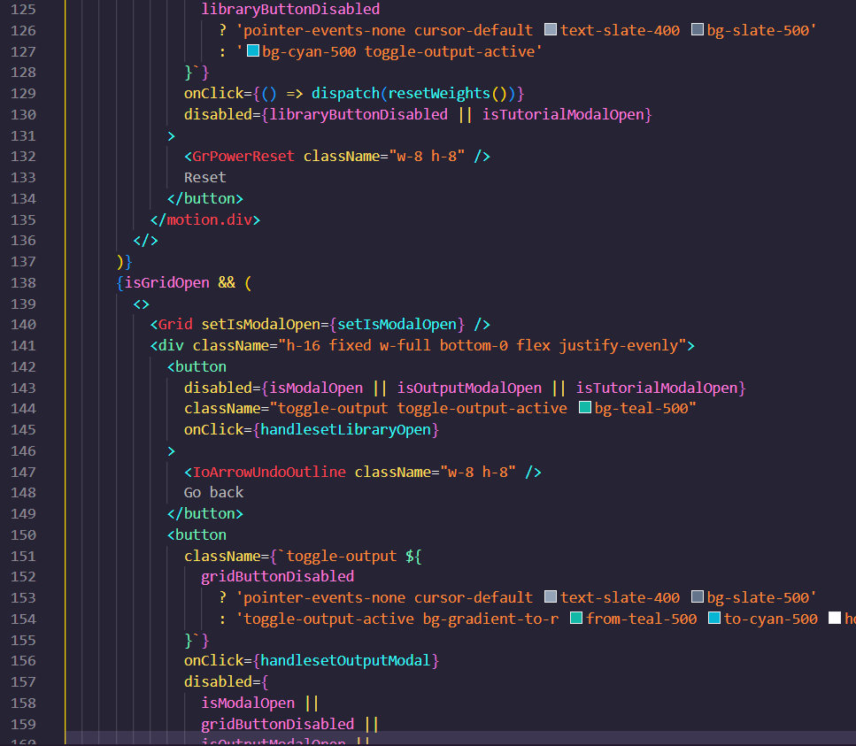
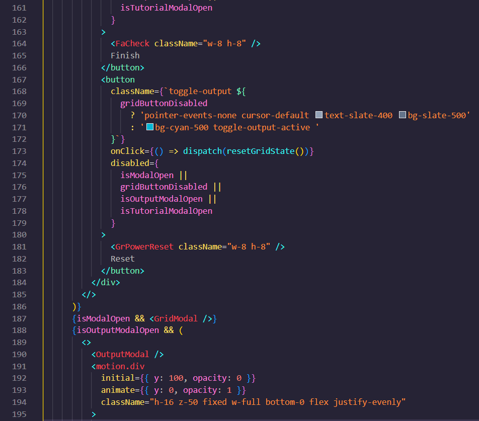
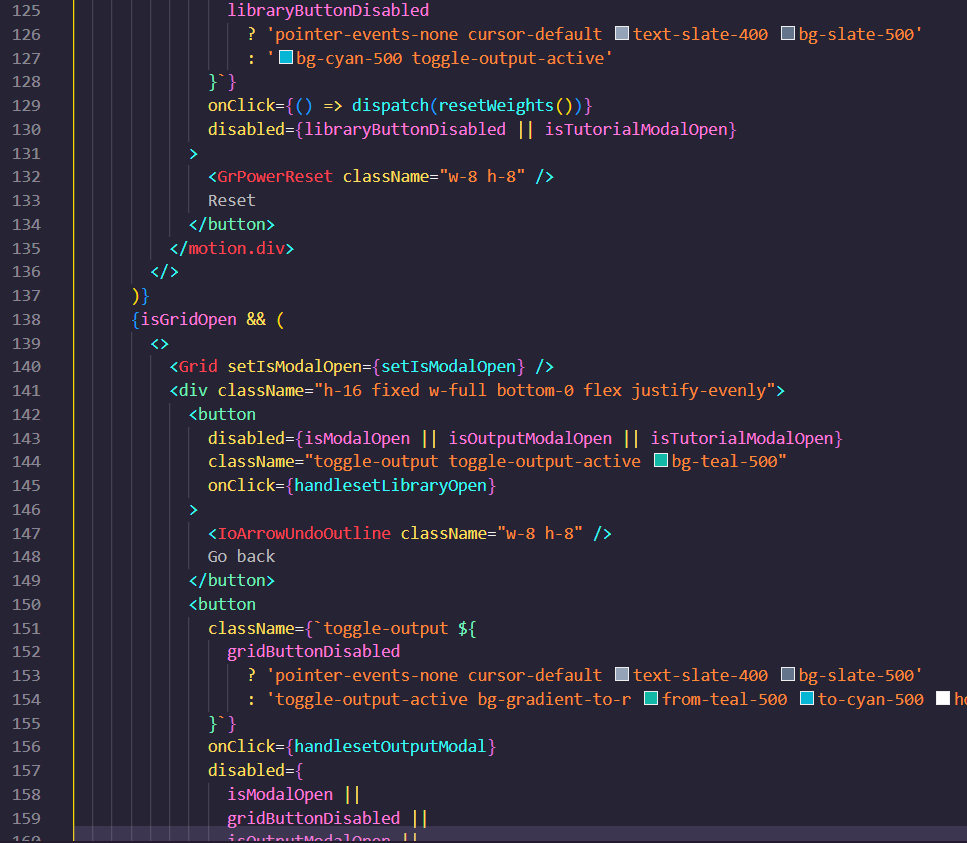
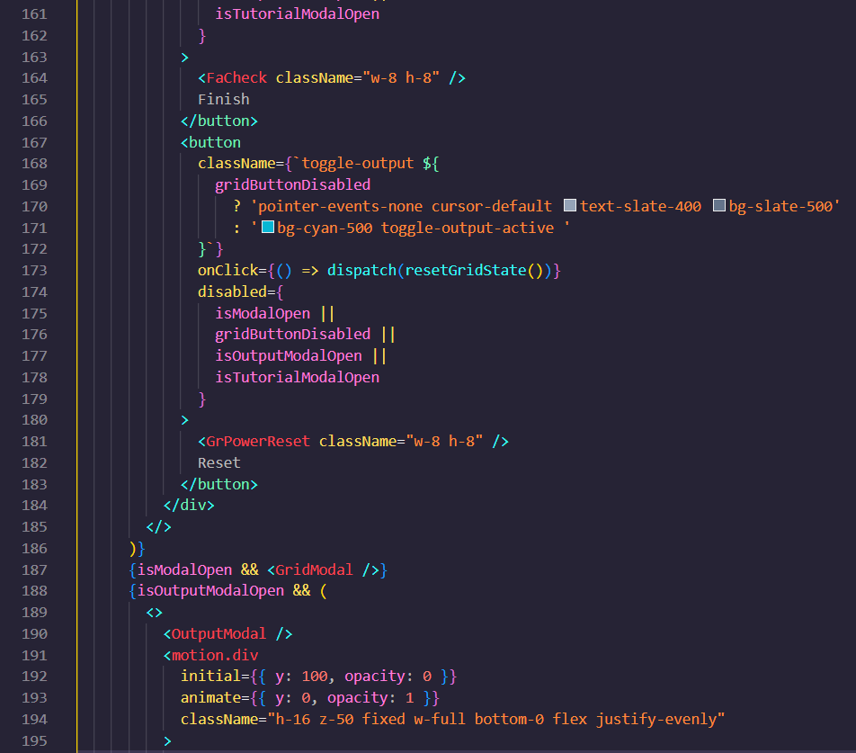

Koodi esimerkkejä - Stackbuilder
 



Liiketoiminta - Tekniikka
Olin mukana projektissa Packy joka oli siis verkkosovellus joka tarjoaa työkaluja kehittäjille ja opiskelijoille. Packy auttaa käyttäjiä löytämään teknologioita omia sovelluksia varten. Ryhmämme työskentely oli tasaista ja kaikki hoitivat alueensa hyvin ja kunnolla. Ryhmähenki oli loistava ja moitteita ryhmätyöskentelyssä ei mielestäni löytynyt. Minulle ryhmässä oli tärkeää se että pääsisin ryhmään jossa pääsisin tekemään roolina tekniikkaa ja sen lisäksi olemaan liiketoiminta vastaava. Olin alussa asennoitunut että mihin tahansa ryhmään päädynkin tulisimme käyttäämään tuttuja teknologioita eli niitä mitä meille on jo opetettu.
Projektissa vastasin projektin liiketoiminnasta ja toimin mukana frontend-kehittäjänä. Frontend kehittäjänä tein raakoja versioita eri sovelluksen sivuista. Kehitin eri sivujen funktioita sekä toiminnalisuuksia. Lisäksi työskentelin silloin tällöin osana Redux-tilahallintaa. Liiketoiminnassa pääsin työskentelemään eri kaavioiden parissa kuten BMC, VPC,oma oppimispäiväkirja, GDPR sekä osallistumaan TikoBiz kokouksiin jossa harjoiteltiin pitchausta ja käytiin läpi ja kehitettiin sitä mitä voitaisiin parantaa projektin liiketoimintaa.
Olin asenoitunut että varsinkin projektin alkuvaiheessa tulisi olemaan ongelmia, mutta en että olisi niin paljon mitä meillä oli. Ennen ticorporatea olin opiskellut Reactia jo hieman eli minulla oli jokin käsitys miten se toimii, mutta omat ongelmat tulivat sitten siinä että käytimme Nextjs frameworkkia. Aluksi meni 1-2 viikkoa siihen että opiskelin asioita, mutta opin asian todella nopeasti. Ongelmia ilmeni myös meidän tietokannan valinnassa joka oli aluksi Firebase, mutta sen ilmaisen version raja meni täyteen todella nopeasti ja jouduimme vaihtamaan sen. Vaihdoimme tietokantamme tämän jälkeen Neo4j-tietokantaan jota meille ehdotettiin. Tämä pysyin tietokantanamme loppuun asti. Haasteita ilmeni Redux-tilahallintassa joka aiheutti päänvaivaa, mutta ryhmätyöskentelyllä siitäkin selvittiin. Lopussa haasteita ilmeni sovelluksen suorituskyvyn kanssa. Sitä etsittiin pari päivää ja lopulta ongelma olikin vain yksi rivi koodia Redux-tilanhallinnassa.
Tekniikka - Frontend
Liiketoiminta - TikoBiz
Backend ja Frontend kehittäminen
Liiketoiminta projektissa
Ryhmätyöskentely projektissa Frontend-kehittäjänä
Redux-tilahallinta
React - Nextjs
Neo4j



Tähän tulevaiduuesta
Omat vahvuudet olivat ennen ticorporatea ehdottomasti Backend koodaamisessa kuin Frontendissä. Kuitenkin nyt ticorporaten jälkeen Frontend on kehittynyt enemmän kuin Backend mutta mielestäni kyllä molemmat ovat samalla tasolla. Ticorporaten aikana sain todella paljon oppia Frontend-kehityksestä ja Reactista. Backend-kehityksestä sain hieman oppia mutta en niin paljoa koska ei ollut minun vastuualueeni.
Tähän tulevaiduuesta